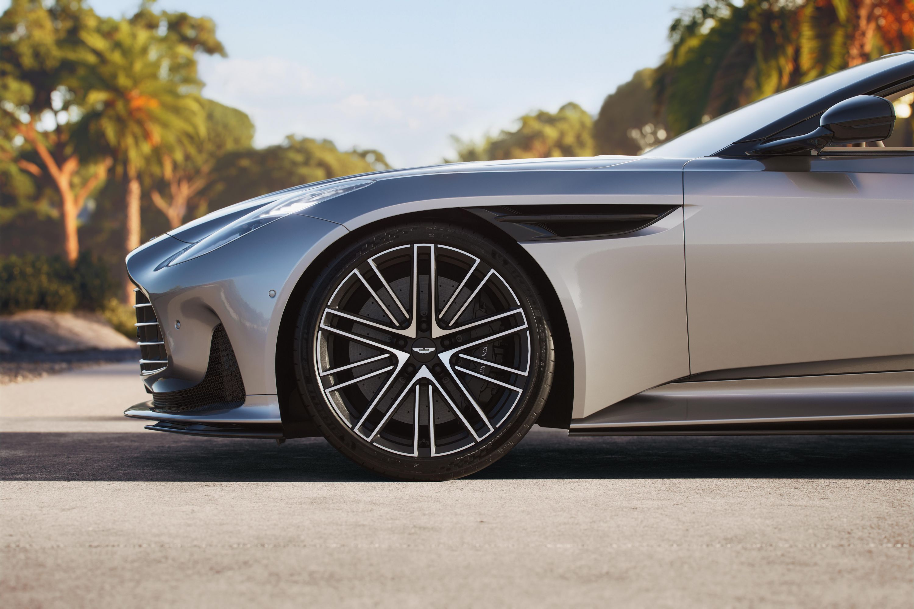
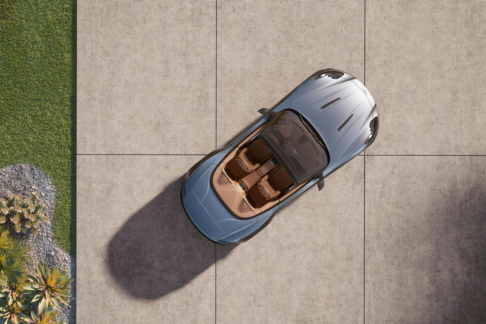
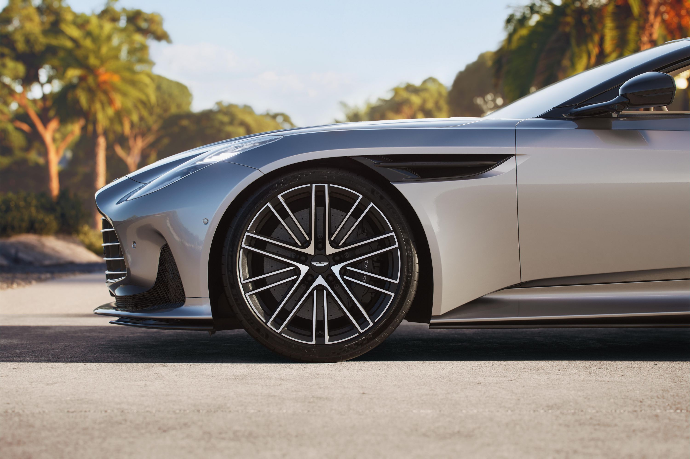
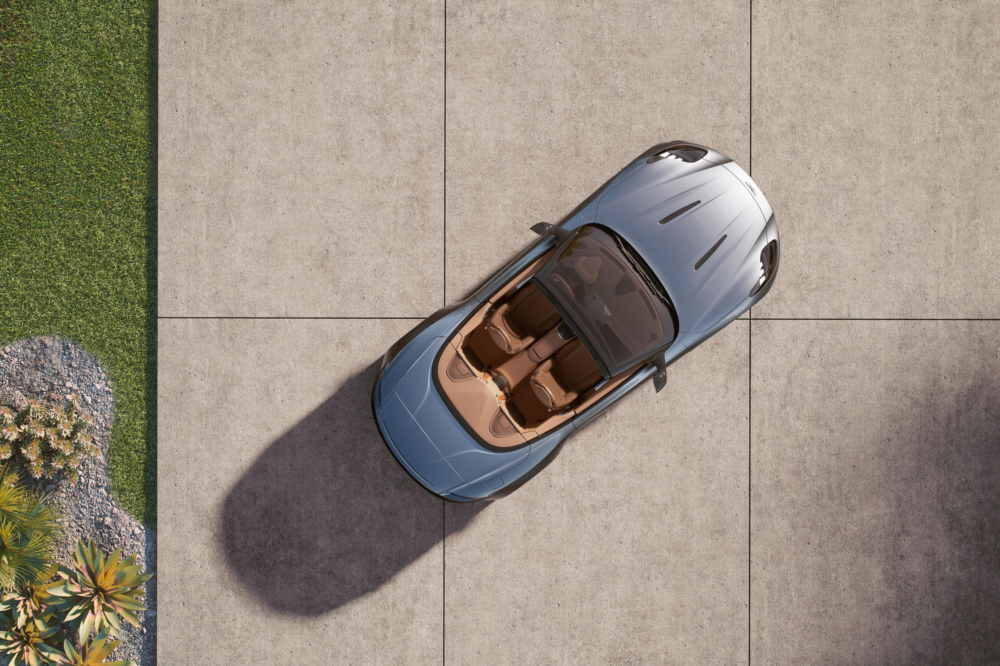

مواصفات السيارة
- المحرك:4.0 لتر v8 توين تيربو
- القوة: 671 حصان
- ناقل الحركة: بثماني سرعات أوتوماتيك
- التسارع: 0-100 كم/س في 3.6 ثانية
- استهلاك الوقود: 20 لتر / 100 كم
- سعة الخزان: 50 لتر
- نظام الأمان: ABS, EBD, Airbags
Although the DB11 made for a lovely cruiser, it never quite had the dynamic aptitude to be a true driver’s car. That changes with the DB12—perhaps to a fault.
There’s no question that the DB12 is far sportier than its predecessor. Of course, its mighty twin-turbocharged V-8 and the ferocious noises it makes are key contributors to that. However, the DB12’s chassis revisions do more to make it a remarkably sporty Aston Martin. Its steering and braking are wonderfully precise, while the broad rear tires and software controls ensure tremendous traction. But the DB12 Volante’s super-stiff ride quality benefits sportiness at a considerable detriment to comfort.
Beyond its aggressive personality, the DB12 distinguishes itself from the DB11 with exterior and interior design that’s somehow even more beautiful. The cabin is thoroughly reworked in a way that improves aesthetics, technology, and ease of use. Aston Martin appreciably bucks an industry trend by preserving plenty of physical buttons and switches inside the cabin, yet the automaker’s new infotainment system is much better arranged and quicker than before.
Aston Marin seeks to enter a new era, one where it competes among makers of exotic sports cars more than luxurious grand tourers. Even if the DB12 might be too intense for some drivers, others will delight in the car’s awesome dynamic capabilities—and all will like looking at it even more.
What Engine Is in the Aston Martin DB12?
Despite what the number in its name might imply, the DB12 does not use a V-12 engine—that’ll be reserved for Aston Martin’s even higher-end cars. Instead, it has a twin-turbocharged 4.0-liter V-8 built by Mercedes-AMG. With Aston Martin’s unique tuning applied, this engine produces 671 hp and 590 lb-ft of torque. The automaker says that’s good for a 3.5-second 0–60-mph time and a top speed above 200 mph. Fuel economy comes in at 15/22 mpg city/highway.
Safety and Driver Assist Features
The 2025 Aston Martin DB12 comes with a generous number of driver assist and active safety features. Among these are front automatic emergency braking, side and rear cross-traffic alert, blind-spot monitoring, lane departure warning, lane keep assist, adaptive cruise control, and automatic high-beams.
How Many Seats in the DB12?
There are four seats in the DB12, although the back seats are tiny—whoever’s up front will have to be gracious in sliding their seats far forward to provide any legroom to those behind. Additionally, the coupe version offers very little headroom; putting the top down in the Volante provides more space for all aboard. Perhaps the back seats are best thought of as additional storage to supplement the 9.3-cubic-foot trunk.

 


